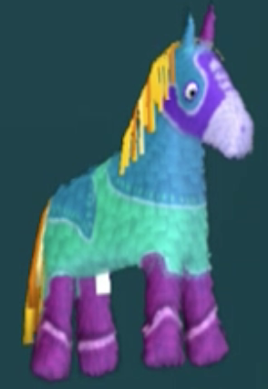

HOME
Welcome to the new site! Everything is very subject to change.
Downloaded VSCodium and I'm utilizing GitHub forwarding (or however it's called) to make life a LOT easier for me, it's been a dream so far <3
Being able to work on the whole thing and update it all in one go is AWESOME, so is not relying on the fucking w3 schools code editor to work on my site like a neanderthal.

fucking awesome piñataOverhaul Updates
@ Mar.4 11:41pm
Added a proper page for my drawings as well as a web collection. Also added a nice clock widget in the sidebar that I feel adds some life. My last final is tomorrow thank GOD
@ Mar.4 3:16am
LOVING IT!!!! figured out how to add image masks + added some texture in the background of the main content container and I LOVE how it ties everything together!
The entire Index section of the menu now has working links w/ enough content that I feel I can move onto the Artwork section. Still needed to update the splash page and make a new button to match the new theme once I'm done, as a little treat for myself.
I'm also keeping the Horstatio here until the forseeable future, he's like a pet to me now
@ Mar.2 ?:??pm
I'm liking how everything's looking so far, I really love a good 4:3 ratio so I've implemented that here and I really prefer everything being tight-knit like this. Please let me know if anything is confusing or hard to read!